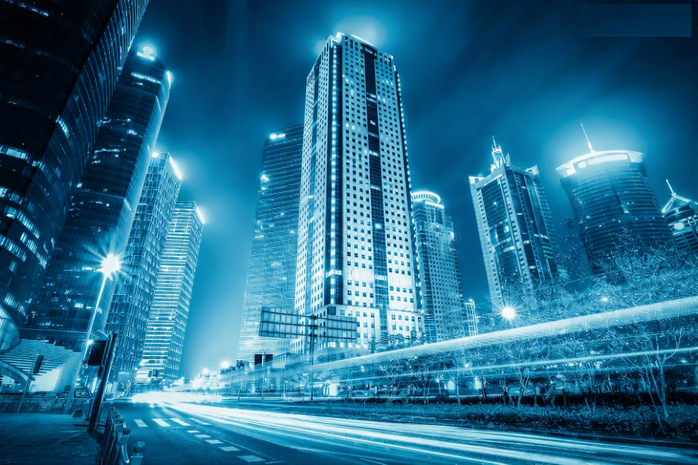
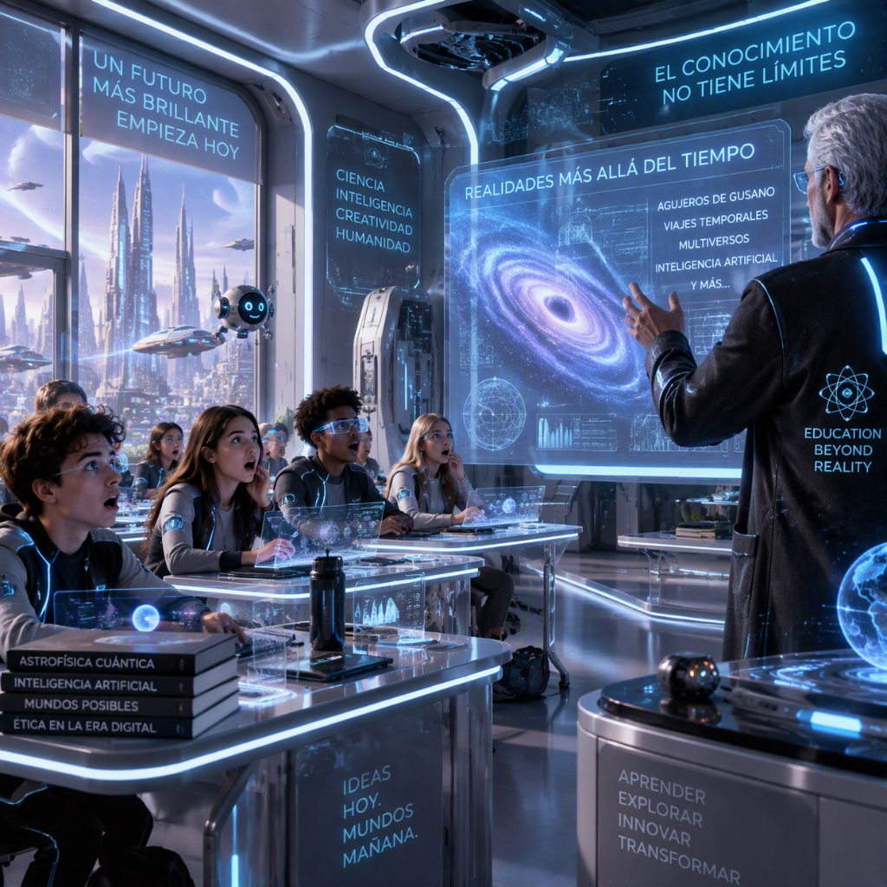
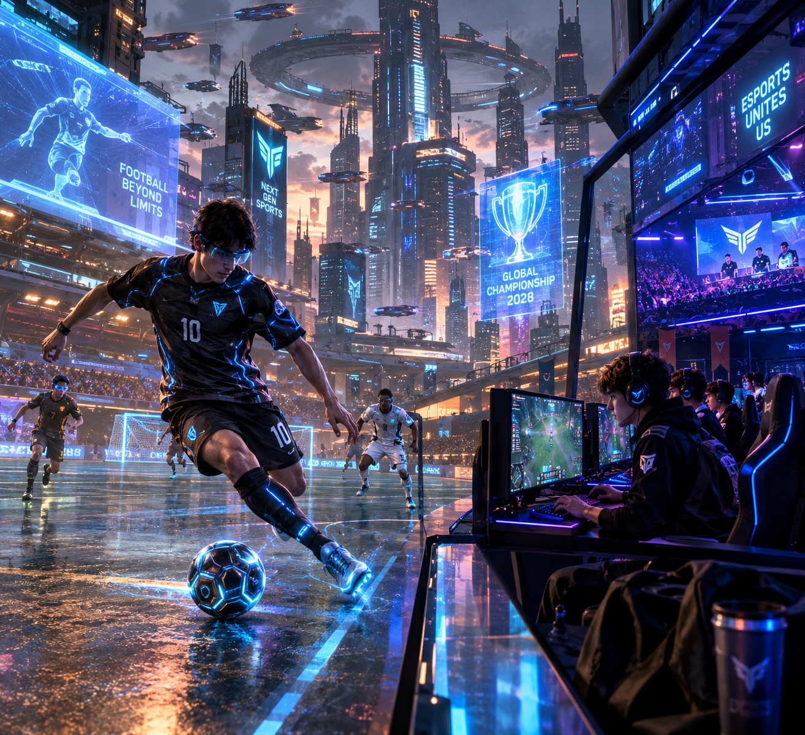
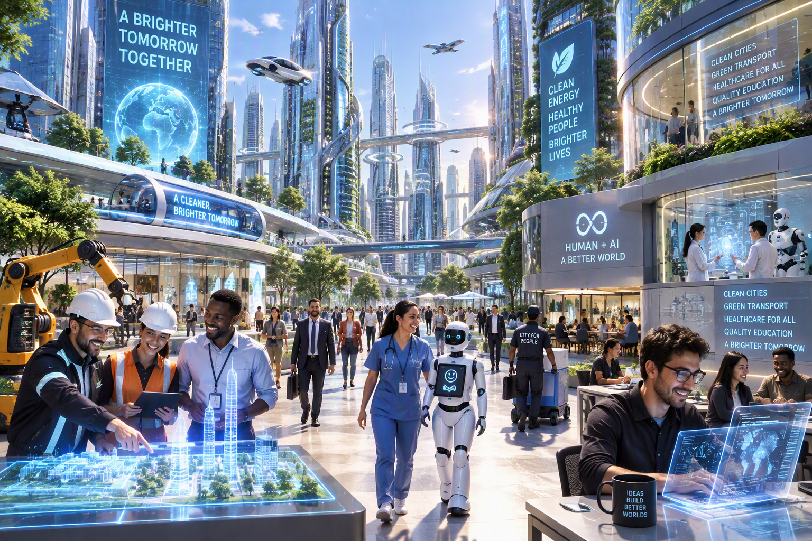

Nuestra Ciudad

Te presentamos la ciudad Cyber City la cual te ofrece vivir en un
gran hogar futurista. Olvidate de ir a hacer las compras, de los ladrones y tus malas
experiencias con el internet.
Aquí puedes vivir con toda tu familia a tan solo un precio de 600 USD al mes.
Tenemos robots que limpian la basura de la ciudad día a día, unos robots repartidores que
te llevan la comida a tu casa y sin siquiera un costo de envio.
Conocé más sobre nuestra historia...
Educación gratuita para todos

Disponemos de la mejor educación a nivel internacional. Todos los chicos y chicas tendran un acceso
gratuito a cada Escuela y Universidad de la ciudad.
Actualmente contamos con 15 escuelas y 2 universidades con una gran variedad de carreras para elegir.
También nuestra educación cuenta con distintos tipos de eventos culturales los cuales son enfocados en
música, deporte y gastronomia nacional e internacional.
Deportes

Tenemos distintos clubes a lo largo de la ciudad con una gran variedad de deportes, al haber un transporte
rápido y eficiente sus habitantes pueden recorrer a gran velocidad de un lado a otro.
Los deportes más destacados de la ciudad actualmente son el Fútbol y los ESPORTS que cuenta con cientos
de jugadores de videojuegos como FIFA, League Of Legends y Counter Strike.
Hoy en día los chicos al tener un accesibilidad y fácilidad a la hora experimentar con distintos tipos de
juegos suelen optar por competir profesionalmente.
Estos deportes además de beneficiar a la cultura de la sociedad y exaltar de felicidad a sus habitantes también
nos da grandes ingresos monetarios con cada evento o competición que se concreta.
¿Necesitas un empleo?

Tenemos trabajos disponibles para todos los habitantes de nuestra ciudad. Van a poder
seleccionar un trabajo según sus gustos personales.
En caso de que no encuentres algun trabajo que no te guste podras participar en el programa
de Trabajadores en Desarrollo en el cual haces distintos tipos de
actividades para que puedas encontrar a lo que te gustaria dedicarte laboralmente.
¿Querés vivir acá y no sabés cómo hacer?
¡Mudarte al futuro es más fácil de lo que pensás! El proceso de postulación es 100% digital, seguro y te llevará menos de 10 minutos. Buscamos personas con ganas de innovar, trabajar y formar parte de una comunidad única en el mundo.
El proceso en 3 simples pasos:
- 1. Completá el formulario: Hacé clic en el enlace de abajo e ingresá tus datos personales, formación y preferencias de convivencia.
- 2. Selección de vivienda y empleo: Nuestro sistema inteligente te asignará opciones de hogares y puestos de trabajo adaptados a tus gustos.
- 3. ¡Bienvenido a bordo!: Una vez aprobado tu perfil, recibirás tu pase digital de ciudadano y las instrucciones para tu mudanza.
¿Todo listo para empezar? Registrate ingresando tus datos en nuestro portal oficial: Comenzar Registro de Ciudadano
¿Necesitás ayuda con el proceso?
No te preocupes. Si tenés dudas sobre los requisitos o no sabés cómo completar algún campo, podés mirar nuestro video tutorial de inscripción paso a paso: